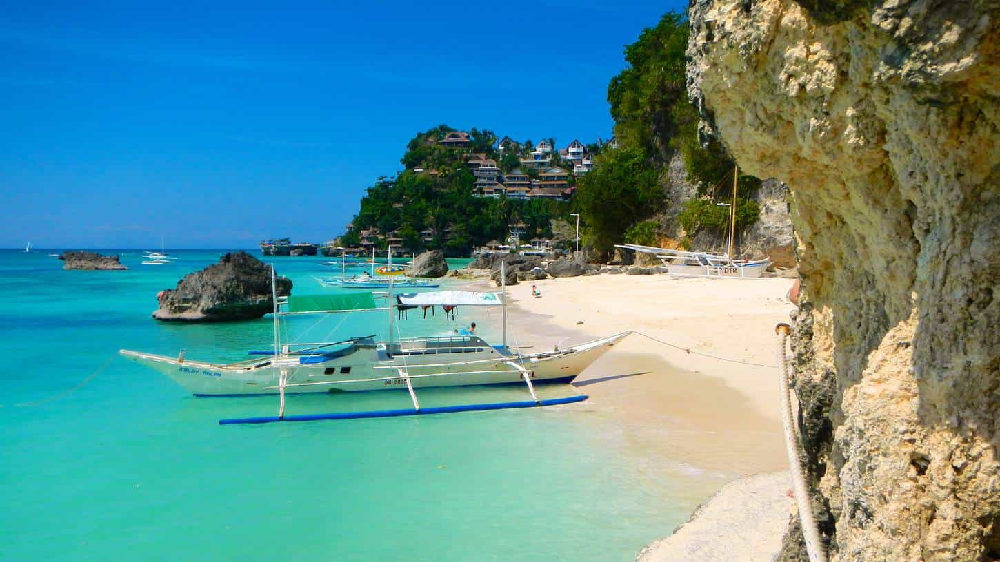

G-Freedom is an oilfield technician, writer and explorer. When not off somewhere new he's thinking, in the gym, or writing on www.artofselfhood.com


I moved to the Philippines just over 18 months ago now, and since living here I’ve come to some realizations about the place that I want to share with the readers at ROK.
It takes a while to adjust to any culture you transport yourself to, and it’s easily a good year or so before you begin to understand what’s going on around you. Although I wasn’t a huge fan of the Philippines to begin with, the place has grown on me, and perhaps because I am leaving again to relocate to an island off the coast of Morocco, I’ve come to appreciate much about the Philippines.
These are some reflections on this 7000 island archipelago that’s emerging into the new world, but which is still very much part of the old.

You’d never guess it from the polluted, filthy cities or the endless traffic jams and beggars in the streets of Manila, but this country is unbelievably beautiful. There are endless islands to explore, there’s thick, dense jungle full of life and rare creatures, there are traditional people living completely untouched by the scourge of Western materialism who have refused to integrate into modern society, and there are waterfalls, canyons and underwater world’s galore.
Every country is beautiful in its own right, but the Philippines will bowl you over when you see it in all its glory.
I am lucky to have a Filipino friend who lived in the USA for 12 years, who is able to understand my Western mentality and help me understand some of the more complex, confusing elements of life here.
For example, I once complained about the lack of driving rules and the fact that nobody seems to follow and rules here. My friend schooled me. What I perceived as a lack of discipline and laziness, he saw as freedom. “We do what we want because we fought a war for our freedom, and we don’t let the government tell us what to do” was the essential element of his reply.
It makes a lot of sense when you think about it. In the West things are a lot more orderly and efficient, but then again we can be arrested and fined or jailed for just about anything.
Libertarians will love the Philippines. You can pretty much do whatever you want as long as it isn’t an act of violence towards others.

Now I know this is a touchy subject on ROK, and many would argue that the best wife is no wife. I can feel that, and there’s some merit to that perspective.
That said, many men also wouldn’t mind having a beautiful, smiling female companion who brings them breakfast in bed literally every morning and who stands back and gets in line when major decisions for the family have to be made.
There’s no such thing as a perfect wife, and there never will be, and there are also plenty of soul-destroying, horrid Filipinas who will make your life hell, but if you meet a good one, she will blow you mind with how feminine, traditional and attentive she is.
A great place to start is by trying to meet Filipinas online to see what they’re all about before coming here. The Philippines is definitely still a firm and strong patriarchy and women value it and can’t understand why women in the West would want it any other way.
I’d say the central institution which governs most of Western life is work. Perhaps it’s education early on in life, but it’s work for much of the rest of it.
Not so here. Family is number one, and work can wait if the family needs help. At first this was deeply confusing to me and I genuinely thought there were just a lot of unemployed people, but I later learned that these people often take days off to help a sister around the house when her baby is born, to visit their grand kids and grandparents, and to do small things like gather for lunch and remember the dead.
This kind of family ethic simply no longer exists in either Europe or America. It’s a crying shame, because it is something special. Sure, it can be overwhelming to begin with when you first encounter it, but it is better than the vacuous, family destroying culture we have created in much of the West.
When’s the last time you told your boss “I’m not coming in today, it’s my kid’s birthday.” If that sounds like your kind of deal, the Philippines is worth a look.
This is my final reflection on this amazing country I have come to enjoy. The Philippines is a real-life tragedy, unfolding in the living flesh.
It’s full of colorful characters, battling against the forces of corrupt evil that oversee it, and the current president is one of them. At first I was taken aback by his crude style and the fact he is allegedly having people killed in the street, and the social justice warrior childhood indoctrination in me wanted to cry out “Human Rights abuse!,” but when I saw the first new electrical pylons go up, the brand new trash trucks that now collect the waste, the fresh off the assembly line ambulances that weren’t even conceivable 6 months ago, and the statistics that crime has dropped 50% in 3 months, I see him in a new light.
Yet the Philippines has a long way to go. This country is bursting with potential, but it is squandered by the greedy and the thieves who run it.
Will the Philippines make it? I don’t know. One thing I do know is that the current president is having a damn good go of ridding it of the cancerous lesions who feed off the people, and whether or not he turns out to be another chapter in the tragedy or a new beginning, we’ll have to wait and see.
The Philippines is a great place to check out if you’re looking for something different. Even if you don’t end up relocating here, it’s definitely a place you won’t regret visiting and spending a little time in.
As I prepare to leave and head back West, I wish I could bring some of these things with me. It isn’t a perfect place to live, but it definitely has its bright-sides.